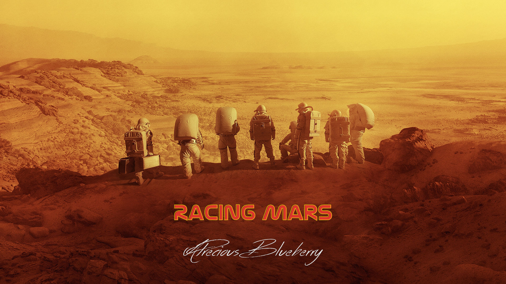

compendium ➦

Three spacecraft are headed toward Mars. NASA and the Soviets prepare for launch, but meanwhile a commercial spaceflight company shocks the world when they announce that they will be the first to reach Mars. The race to land first brings surprise maneuvers, desperate measures, and unexpected allies.
In this TV-to-film fan-edit of For All Mankind, I edited the first half of season three — the beginning of the Mars seasons — into the first of what will be a trilogy of films. This first film, Racing Mars, features Ed and Dani as the main characters, as they race to be the first to land a human being on Mars.
Original runtime: 5hrs
This edit's runtime: 1h35m (time cut, 3h25m)
TV shows tend to have a different structure than movies. TV has a lot more seeds, hooks, and cliffhangers, meant to lay the groundwork for future seasons or to entice you to watch the next episode. But movies, on the other hand, are typically more self-contained and lean. Every setup should have a payoff, every Chekhov's gun should be fired, and every scene should advance the story. And that's what I strived for with this edit.
In my Red Moon trilogy, I reused FAM episode titles for each of the three movies ("Red Moon", "Red Moon 2: Into the Abyss", "Red Moon 3: A City Upon a Hill"). For this new Mars trilogy, I originally expected and planned to reuse FAM episode titles as well, but none of the S3 episode titles struck me as the right one. Meanwhile, over in Babylon 5 land, they have an episode titled Racing Mars. That episode wasn't about a literal race, but I remembered that title and it seemed perfect for this new movie.
I don't profit from this fan-edit in any way, and this edit should not be used as a substitute for purchasing the original work. To watch this edit, you're expected to already have legal access to the original show, such as on blu-ray or through a streaming service. If you don't already have it, then you can purchase For All Mankind on blu-ray.
Demo clips
Introducing Phoenix, the show vs the edit: In this demo clip you'll see I cut from Dev's big announcement straight to the Phoenix reveal shot, and I let "Fly Me to the Moon" play over it, instead of the original generic space chatter.
Apollo 10 flashback montage: During Ed's descent, there's a brief moment where he remembers and flashes back to Apollo 10 (S1E2), and that moment is important to Ed's state of mind. But for this movie, I prefer to not assume any "previously on" knowledge, so I cut and stitched my own longer flashback that gives the context needed to understand the flash that comes later during descent.
Update
September 2026 (Hotfix)
- I initially encoded this edit with x265, but I'm unhappy with the results. This time I used x264, like my other edits, and I think it came out better.
What's next
- Racing Mars 2 - This fan-edit film will tell the story of Margo, Aleida, and Sergei, as well as Ellen, Larry, and Pam, using scenes from all of S1 through S3.
- Racing Mars 3: Goldilocks - This fan-edit film will adapt all of FAM's S4 into a single theatrical movie.

Racing Mars (1h35m)
Three spacecraft are headed toward Mars. NASA and the Soviets prepare for launch, but meanwhile a commercial spaceflight company shocks the world when they announce that they will be the first to reach Mars. The race to land first brings surprise maneuvers, desperate measures, and unexpected allies.
Sources: Game Changer, All In, Happy Valley, Seven Minutes of Terror, with brief scenes from He Built the Saturn V
✉ APreciousBlueberry@protonmail.com